Mỗi vòng PageRank là một phép nhân ma trận thưa với véc tơ; bước nhảy và bù nút cụt bảo đảm phép lặp hội tụ.
Bài 03 · Giải thuật nền tảng của Khoa học dữ liệu
Học kỳ 1 · Năm học 2026–2027
Trường Đại học Công nghệ · Đại học Quốc gia Hà Nội
Nhắc lại: \(y=Av\), \(y_i=\sum_j a_{ij}v_j\); Map phát \((i,a_{ij}v_j)\), Reduce cộng theo khóa \(i\) (Bài 02).
Nhắc lại: Combine cộng cục bộ theo khóa; chi phí \(C=I+H\) (Bài 02).
Nhắc lại: phân phối trên \(n\) phần tử là véc tơ \(r\ge0\), \(\sum_i r_i=1\).
Ký hiệu: đồ thị có hướng \(G=(V,E)\), \(n=|V|\) trang, \(m=|E|\) liên kết; cạnh \(j\to i\) từ nguồn \(j\) tới đích \(i\).
Quy ước: véc tơ cột; \(t\) đếm vòng; dấu phẩy thập phân; dung lượng tính bằng byte.
Đọc trước: Leskovec, Rajaraman, Ullman, Mining of Massive Datasets (MMDS), ấn bản 3, Chương 5, §§5.1–5.2, tr.175–195.
Nhu cầu: xếp hạng \(10^9\) trang; ma trận đặc quá lớn.
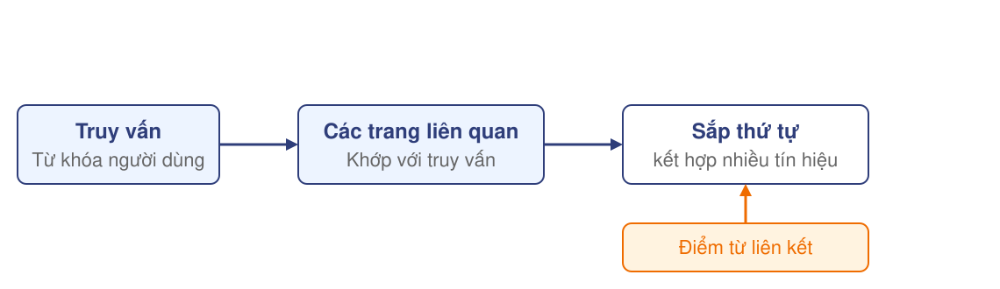
PageRank cho điểm quan trọng theo liên kết, một tín hiệu bên cạnh mức khớp truy vấn.
Giả định \(n=10^9\) trang; mỗi ô 8 byte.
Tính dung lượng ma trận liên kết đặc.
\(n^2=10^{18}\) ô.
\(10^{18}\times8=8\times10^{18}\) byte \(=8\) EB (1 EB là \(10^{18}\) byte).
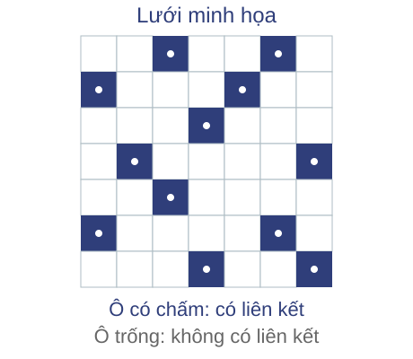
Kết luận: chỉ lưu các liên kết tồn tại khi số liên kết nhỏ hơn nhiều số cặp trang.
\(G=(V,E)\), \(n\) trang, \(m\) liên kết.
Cạnh \(j\to i\): nguồn \(j\) trỏ tới đích \(i\).
\(r_i\ge0\) với mọi \(i\), \(\sum_i r_i=1\).
Xếp giảm dần theo điểm; cho phép đồng hạng.
Giả thiết: \(G\) hữu hạn, \(n\ge1\); liên kết trùng gộp thành một cạnh.
Chuẩn hóa tổng bằng 1 chưa xác định cách chấm điểm.
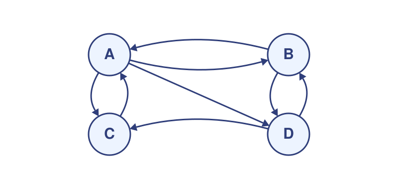
\(n=4\) trang, \(m=8\) liên kết; xác định bậc ra.
| Trang | Liên kết ra tới | Bậc ra |
|---|---|---|
| A | B, C, D | 3 |
| B | A, D | 2 |
| C | A | 1 |
| D | B, C | 2 |
Diễn giải: bậc ra là số liên kết đi khỏi trang; tổng bậc ra bằng \(m=8\).
Nhu cầu: thử quy tắc đơn giản nhất là đếm liên kết vào.
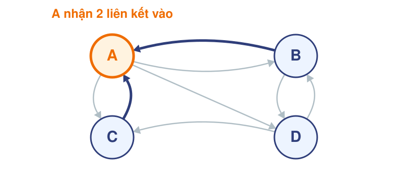
| Trang | Liên kết vào từ | Số liên kết vào |
|---|---|---|
| A | B, C | 2 |
| B | A, D | 2 |
| C | A, D | 2 |
| D | A, B | 2 |
Chuẩn hóa: \(2/8=1/4\) mỗi trang; bốn trang đồng hạng.
Kết luận: cách đếm coi liên kết từ C (một đích) ngang liên kết từ A (ba đích).
Đếm liên kết vào cho bốn trang cùng điểm \(1/4\).
Mỗi trang chia đều điểm hiện có cho các trang đích của nó.
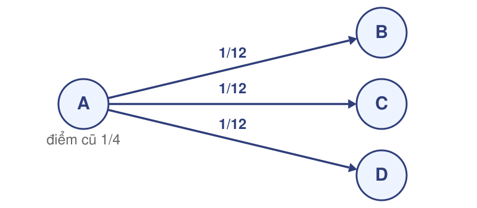
Với \(r_A=1/4\) và ba đích, mỗi đích nhận \((1/4)/3=1/12\).
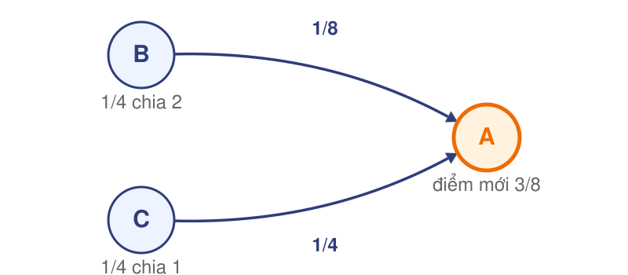
A nhận \(1/8\) từ B (hai đích) và \(1/4\) từ C (một đích): \(1/8+1/4=3/8\).
Điểm cũ \(1/4\) mỗi trang; mọi trang tính đồng thời từ điểm cũ.
| Trang | Các đóng góp nhận được | Điểm mới |
|---|---|---|
| A | \(1/8+1/4\) | \(9/24=3/8\) |
| B | \(1/12+1/8\) | \(5/24\) |
| C | \(1/12+1/8\) | \(5/24\) |
| D | \(1/12+1/8\) | \(5/24\) |
Kết luận: tổng \(9/24+3\cdot5/24=1\); A đứng trước, B, C, D đồng hạng.
Câu hỏi: trên đồ thị bốn trang vừa xét.
Muốn lặp phép chia điểm trên đồ thị bất kỳ, phải xử lý nút cụt, bẫy liên kết và nêu điều kiện dừng.
Ma trận liên kết · Nút cụt · Bẫy liên kết · Bước nhảy ngẫu nhiên · Hội tụ
Nhu cầu: lặp phép chia điểm trên đồ thị bất kỳ.
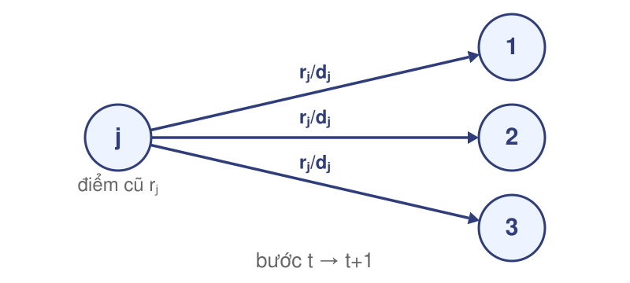
Nhắc lại: một vòng trên bốn trang cho A \(3/8\), mỗi trang B, C, D \(5/24\).
Người đọc ở \(j\) chọn đều một trong \(d_j\) liên kết ra (bậc ra); mỗi đích nhận xác suất \(r_j/d_j\).
Bước đi ngẫu nhiên (random walk): \(r_i\) là xác suất người đọc đang ở trang \(i\).
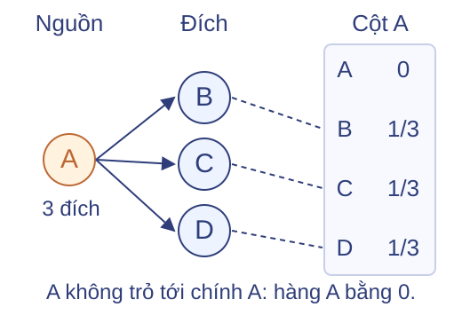
\(d_j\) là số liên kết ra của trang \(j\).
Định nghĩa. Ma trận liên kết \(M_0\) cỡ \(n\times n\) có \((M_0)_{ij}=1/d_j\) khi \(j\to i\); mọi ô khác bằng 0.
Cột là nguồn; hàng là đích.
A có ba liên kết ra: mỗi hàng B, C, D trong cột A nhận giá trị \(1/3\).
Giả thiết: mọi trang có liên kết ra.
\[r^{t+1}=M_0r^t\]
| Trang | Điểm cũ \(r^0\) | Điểm mới \(r^1\) |
|---|---|---|
| A | \(1/4\) | \(9/24\) |
| B, C, D (mỗi trang) | \(1/4\) | \(5/24\) |
Khởi tạo đều \(r_i^0=1/n\); mọi điểm mới trong một vòng tính từ cùng \(r^t\).
\(r^1\) khớp bảng tính tay; phép lặp tìm \(r^*=M_0r^*\), chưa bảo đảm hội tụ.
Định nghĩa. Trang không có liên kết ra gọi là nút cụt (dead end).
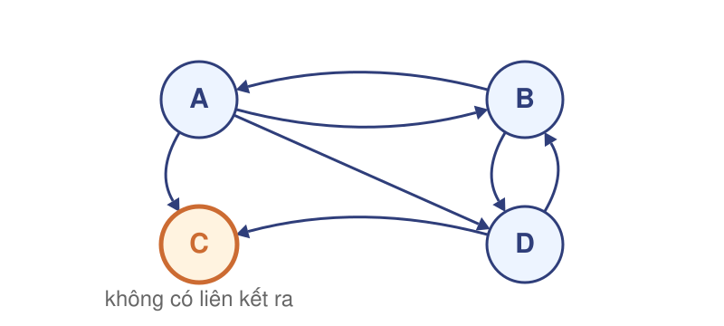
Bỏ C→A: C là nút cụt; \(r^0\) đều \(1/4\).
\[M_0r^0=(3/24,5/24,5/24,5/24)^T\]
Tổng sau một vòng chỉ còn \(18/24=3/4\); phần thiếu là điểm cũ của C.
Định nghĩa. Bẫy liên kết (spider trap) là nhóm trang có liên kết ra nhưng không trỏ ra ngoài nhóm.
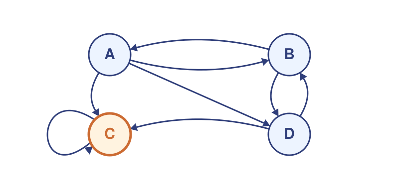
Thay C→A bằng C→C: C là bẫy một nút.
Người đã đến C không rời C khi chỉ theo liên kết.
Trên ví dụ này, lặp thô dồn toàn bộ điểm về C.
Nhu cầu: người đọc phải có cách rời bẫy C.
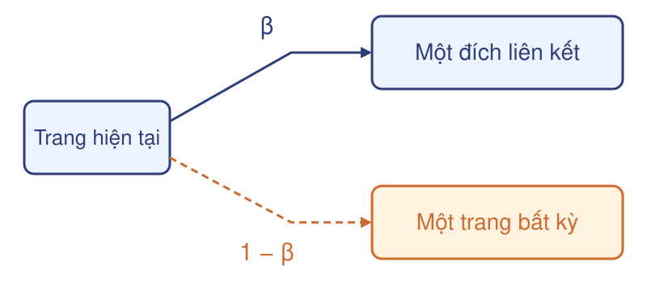
Với xác suất \(\beta\): đi theo một liên kết ra, chọn đều.
Bước nhảy ngẫu nhiên (teleport) là nhảy đều tới một trang bất kỳ với xác suất \(1-\beta\).
\(0<\beta<1\); ví dụ dùng \(\beta=4/5\).
Bước nhảy cho người đọc cơ hội rời bẫy liên kết và tới bất kỳ trang nào.
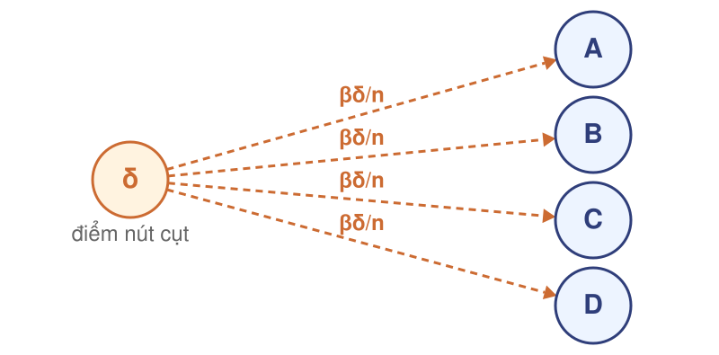
\(\delta=\sum_{j:\,d_j=0}r_j\) là tổng điểm đang ở các nút cụt.
Ở nhánh theo liên kết, nút cụt chọn đều một trang bất kỳ.
Mỗi trang nhận thêm \(\beta\delta/n\).
Biến thể nút cụt C: \(\delta=1/4\), mỗi trang nhận thêm \(\beta\delta/n=1/20\).
\[\beta\sum_{j:\,j\to i}\frac{r_j^t}{d_j}\]
\[\frac{1-\beta}{n}\]
\[\frac{\beta\delta^t}{n}\]
\(\delta^t=\sum_{j:\,d_j=0}r_j^t\) là tổng điểm cũ ở các nút cụt.
Dạng khác: \(r^{t+1}=\beta M_0r^t+\big((1-\beta)+\beta\delta^t\big)u\), với \(u_i=1/n\).
Ba phần cùng dùng \(r^t\); khởi tạo \(r^0=u\).
Đồ thị gốc, không nút cụt nên \(\delta=0\); \(\beta=4/5\); \(r^0\) đều \(1/4\).
| Trang | \(\beta\,M_0r^0\) | \((1-\beta)/n\) | \(r^1\) |
|---|---|---|---|
| A | \(\dfrac{4}{5}\cdot\dfrac{3}{8}=\dfrac{3}{10}\) | \(\dfrac{1}{20}\) | \(\dfrac{7}{20}\) |
| B | \(\dfrac{4}{5}\cdot\dfrac{5}{24}=\dfrac{1}{6}\) | \(\dfrac{1}{20}\) | \(\dfrac{13}{60}\) |
| C | \(\dfrac{4}{5}\cdot\dfrac{5}{24}=\dfrac{1}{6}\) | \(\dfrac{1}{20}\) | \(\dfrac{13}{60}\) |
| D | \(\dfrac{4}{5}\cdot\dfrac{5}{24}=\dfrac{1}{6}\) | \(\dfrac{1}{20}\) | \(\dfrac{13}{60}\) |
Kết luận: tổng \(7/20+3\cdot13/60=1\); A giảm từ \(3/8\) xuống \(7/20\) vì một phần điểm chia đều.
Xóa C→A: C là nút cụt, \(\delta^0=1/4\); \(\beta=4/5\); \(r^0\) đều \(1/4\).
Thành phần chung: \(\dfrac{(1-\beta)+\beta\delta^0}{n}=\dfrac{1/5+1/5}{4}=\dfrac{1}{10}\).
| Trang | \(\beta\,M_0r^0\) | Chung | \(r^1\) |
|---|---|---|---|
| A | \(\dfrac{4}{5}\cdot\dfrac{1}{8}=\dfrac{1}{10}\) | \(\dfrac{1}{10}\) | \(\dfrac{1}{5}\) |
| B, C, D (mỗi trang) | \(\dfrac{4}{5}\cdot\dfrac{5}{24}=\dfrac{1}{6}\) | \(\dfrac{1}{10}\) | \(\dfrac{4}{15}\) |
Tổng \(1/5+3\cdot4/15=1\): điểm của C được hoàn lại đầy đủ qua phần bù.
Đầu vào: danh sách kề của \(G\), \(n\ge1\), \(0<\beta<1\), ngưỡng \(\tau>0\), giới hạn vòng \(T_{\max}\) nguyên dương.
Đầu ra: véc tơ điểm xấp xỉ và trạng thái đạt hoặc chưa đạt ngưỡng.
r = (1/n, ..., 1/n)
lặp t = 1, ..., Tmax:
delta = tổng r[j] của các nút cụt
với mỗi i: new[i] = (1 - beta + beta * delta) / n
với mỗi j có d[j] > 0:
với mỗi i thuộc out[j]: new[i] += beta * r[j] / d[j]
Delta = tổng |new[i] - r[i]|
r = new
nếu Delta <= tau: trả về (r, đạt ngưỡng)
trả về (r, chưa đạt)
Trường hợp biên: mọi trang là nút cụt (kể cả \(n=1\)) cho \(r^1=u\) ngay vòng đầu.
Đo tổng mức thay đổi của các trang giữa hai vòng liên tiếp.
\[\Delta_t=\sum_i|r_i^{t+1}-r_i^t|\]
| Trang | \(r^1\) | \(r^2\) | Chênh lệch tuyệt đối |
|---|---|---|---|
| A | \(7/20\) | \(31/100\) | \(1/25\) |
| B, C, D (mỗi trang) | \(13/60\) | \(23/100\) | \(1/75\) |
Đồ thị gốc, \(\beta=4/5\): \(\Delta_1=1/25+3\cdot1/75=2/25=0{,}08\).
Điều kiện dừng: \(\Delta_t\le\tau\), hoặc hết \(T_{\max}\) vòng (báo chưa đạt).
Mệnh đề. Nếu \(r^t\ge0\) và \(\sum_ir_i^t=1\) thì \(r^{t+1}\ge0\) và \(\sum_ir_i^{t+1}=1\).
Chứng minh. Ba phần không âm: (1) theo liên kết, (2) bù nút cụt, (3) bước nhảy.
\[\underbrace{\beta(1-\delta)}_{(1)}+\underbrace{\beta\delta}_{(2)}+\underbrace{(1-\beta)}_{(3)}=1\]
Ví dụ nút cụt C: \(\beta=4/5,\ \delta=1/4\).
Bất biến: tổng điểm bằng 1 ở mọi vòng; dùng để kiểm chương trình.
Định lý. Với \(0<\beta<1\), bước nhảy đều và bù nút cụt, phép cập nhật đầy đủ \(F\) thỏa
\[\|F(x)-F(y)\|_1\le\beta\|x-y\|_1,\qquad \|x\|_1=\sum_i|x_i|.\]
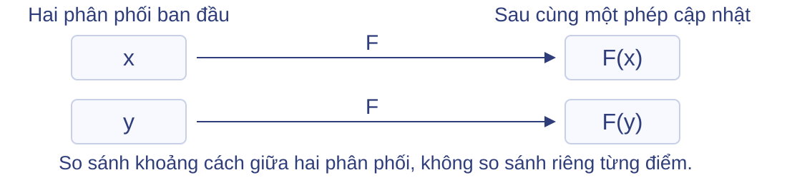
Chứng minh. \(F(x)=\beta\bar Mx+(1-\beta)u\), với \(\bar M\) là \(M_0\) có cột nút cụt thay bằng \(u\).
Phần nhảy triệt tiêu trong hiệu; \(\bar M\) không âm, mỗi cột có tổng 1, nên khoảng cách co theo hệ số \(\beta\).
Do đó dãy lặp hội tụ tới phân phối duy nhất \(r^*=F(r^*)\).
Câu hỏi: trên mô hình vừa xây dựng.
Muốn tính một vòng khi đồ thị không vừa bộ nhớ, phải lưu thưa và chia ma trận, véc tơ thành khối.
Danh sách liên kết ra · Chia khối · Map và Combine · Reduce · Tính đúng
Nhu cầu: tính một vòng khi đồ thị và véc tơ không vừa bộ nhớ chính (RAM).
Nhắc lại: với \(n=10^9\), ma trận đặc cần \(8\cdot10^{18}\) byte.
\(n\) trang, \(m\) liên kết.
Ma trận đặc lưu \(n^2\) ô; danh sách liên kết chỉ ghi \(m\) cạnh có thật.
Khi \(m\ll n^2\), phần lớn ô bằng 0; quy tắc cập nhật giữ nguyên.
| Nguồn | Bậc \(d_j\) | Đích |
|---|---|---|
| A | 3 | B, C, D |
| B | 2 | A, D |
| C | 1 | A |
| D | 2 | B, C |
Mỗi bản ghi: (nguồn, \(d_j\), danh sách đích).
Nút cụt giữ bản ghi với \(d_j=0\), danh sách rỗng.
Giá trị \(1/d_j\) suy từ bậc ra nên không lưu từng phần tử.
Đồ thị gốc, điểm cũ mỗi trang \(1/4\). Theo dõi các đóng góp có đích A.
B→A: \((A,1/8)\)
C→A: \((A,1/4)\)
Khóa A
\([1/8,1/4]\)
\(1/8+1/4\)
\(=3/8\)
Một vòng là phép nhân ma trận–véc tơ của Bài 02: Map phát (đích, đóng góp), Reduce cộng theo đích.
Đặt \(z=M_0r\); \(k=2\): cắt sau B ở cả hàng và cột, tạo bốn khối \(2\times2\).
Hàng là đích ↓ · Cột là nguồn →
| \(M_0\) | A | B | C | D |
|---|---|---|---|---|
| A | 0 | \(1/2\) | 1 | 0 |
| B | \(1/3\) | 0 | 0 | \(1/2\) |
| C | \(1/3\) | 0 | 0 | \(1/2\) |
| D | \(1/3\) | \(1/2\) | 0 | 0 |
Khối \(M_{ab}\) gồm hàng đích \(a\), cột nguồn \(b\); \(k\) dải mỗi chiều cho \(k^2\) khối.
Đồ thị gốc, \(k=2\), \(r^0\) đều \(1/4\).
Dải nguồn A, B: \(r_1=(1/4,1/4)^T\) cấp cho \(M_{11}\), \(M_{21}\).
Dải nguồn C, D: \(r_2=(1/4,1/4)^T\) cấp cho \(M_{12}\), \(M_{22}\).
Mỗi tác vụ giữ \(r_b\), tích lũy \(z_a\) và đọc khối tuần tự.
Ký hiệu: \(r_b\), \(z_a\) là dải theo khối; \(r_j\), \(z_A\) là giá trị của một trang.
Mỗi dải điểm được đọc \(k\) lần, mỗi lần bởi một tác vụ cùng cột.
| Khối | Nguồn | \(d_j\) | Đích trong khối |
|---|---|---|---|
| \(M_{11}\): đích A, B | A | 3 | B |
| \(M_{11}\): đích A, B | B | 2 | A |
| \(M_{21}\): đích C, D | A | 3 | C, D |
| \(M_{21}\): đích C, D | B | 2 | D |
\(M_{12}\): (C, 1, [A]), (D, 2, [B]); \(M_{22}\): (D, 2, [C]).
Mỗi cạnh thuộc một khối; \(d_A=3\) là bậc toàn cục ở cả hai khối.
Đầu vào: bản ghi của khối \(M_{ab}\) và dải điểm cũ \(r_b\).
Đầu ra: cặp (trang đích, đóng góp hoặc tổng từng phần).
Map(M_ab, r_b):
với mỗi (j, dj, dests) trong M_ab:
với mỗi i trong dests:
yield(i, r_b[j] / dj)
Combine(i, values):
yield(i, sum(values))
| Ví dụ \(M_{21}\), \(r_A=r_B=1/4\) | Map phát | Combine phát |
|---|---|---|
| \((A,3,[C,D])\) \((B,2,[D])\) | \((C,1/12)\) \((D,1/12),(D,1/8)\) | \((C,1/12)\) \((D,5/24)\) |
Khóa là trang đích: hai đóng góp cho D được cộng tại chỗ trước khi chuyển dữ liệu.
\(\delta=\sum_{j:d_j=0}r_j\), tính một lần; gửi \(\delta\) tới các Reduce.
Thêm bản ghi \((i,0)\) cho mỗi trang \(i\).
Đầu vào: \(L_i\) là các đóng góp hoặc tổng từng phần mang khóa \(i\).
Reduce(i, L_i):
z_i = sum(L_i)
return(i, beta * z_i + (1 - beta + beta * delta) / n)
Phần chung được cộng đúng một lần cho mỗi đích, sau khi đã gộp các đóng góp.
Đồ thị gốc, \(r^0\) đều \(1/4\), \(\beta=4/5\), \(k=2\); không có nút cụt.
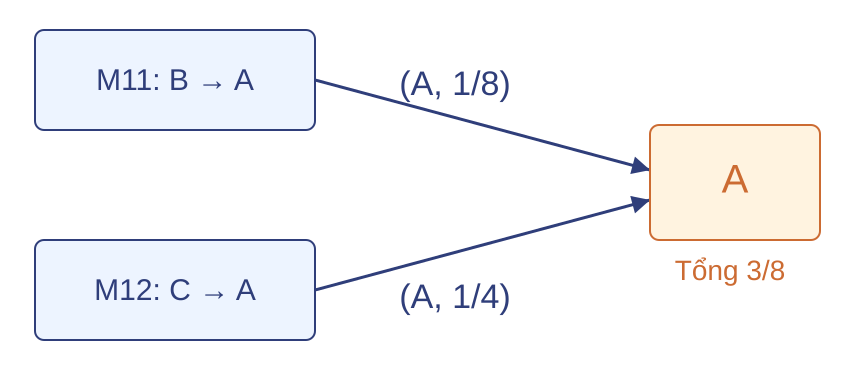
\(z_A=1/8+1/4=3/8\).
\[r_A^1=\frac45\cdot\frac38+\frac1{20}=\frac7{20}\]
Hai tác vụ cùng tạo khóa A; \(r_A^1=7/20\) khớp phép tính một máy.
Mệnh đề. Nếu mọi tác vụ dùng cùng \(r\) và các tập nguồn \(V_1,\ldots,V_k\) không chồng nhau thì
\[\sum_{b=1}^{k}\sum_{j\in V_b:\,j\to i}\frac{r_j}{d_j}=\sum_{j:\,j\to i}\frac{r_j}{d_j}.\]
Do đó kết quả bằng phép tính một máy trên số thực.
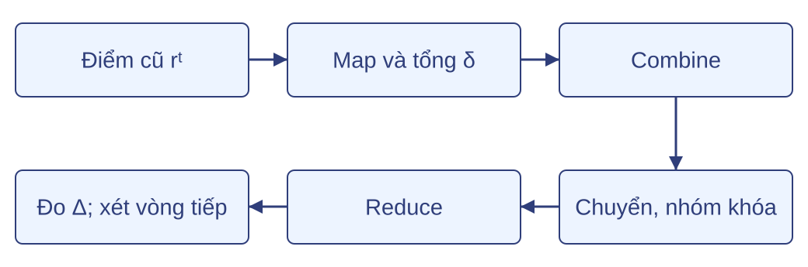
\(k^2\) là số tác vụ khối, không phải số máy; với \(k=2\), bốn tác vụ có thể chạy trên hai máy.
Câu hỏi: vận dụng cách chia khối.
Muốn biết cách chia khối tiết kiệm được gì, phải đo dung lượng, bộ nhớ một tác vụ, tổng việc và thời gian.
Dung lượng đồ thị · Bộ nhớ một tác vụ · Combine · Băng thông · Thời gian một vòng
byte biểu diễn đồ thị
byte RAM một tác vụ giữ
thời gian nếu chạy tuần tự
từ lúc bắt đầu tới lúc xong
Ký hiệu: \(n\) trang, \(m\) liên kết, \(k\) dải mỗi chiều, \(p\) máy; \(B\) là bộ nhớ, khác trang B.
Mô hình: điểm là số thực 8 byte; mã trang và bậc ra là số nguyên 4 byte.
| Cách biểu diễn | Công thức | Ví dụ \(n=4,\ m=8\) |
|---|---|---|
| Ma trận đặc | \(S_{\text{dense}}=8n^2\) | 128 byte |
| Danh sách liên kết, mã nguồn ngầm | \(S_{\text{adj}}\approx 4(n+m)\) | 48 byte |
\(S_{\text{adj}}\) gồm \(n\) bậc ra và \(m\) mã đích, không tính siêu dữ liệu.
Tỷ số \(S_{\text{dense}}/S_{\text{adj}}\approx2n^2/(n+m)\) lớn khi \(m\ll n^2\).
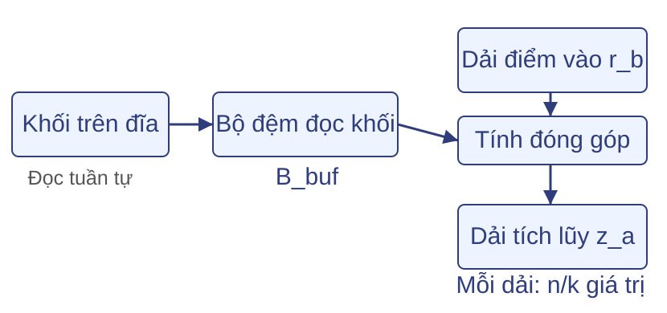
Mô hình: \(k\) chia hết \(n\); mỗi dải \(n/k\) giá trị 8 byte.
\[B_{\text{task}}\approx \frac{16n}{k}+B_{\text{buf}}\]
Ví dụ \(n=4,\ k=2\): \(2\cdot 2\cdot 8=32\) byte cộng \(B_{\text{buf}}\).
Bộ nhớ làm việc cho hai dải véc tơ, không phải toàn bộ RAM của hệ thống.
Mô hình: \(I=S_{\mathrm{blocks}}+8kn\); chi phí là kích thước đầu vào tác vụ (Bài 02).
| Bước | Số lần | Chi phí mỗi lần | Đóng góp |
|---|---|---|---|
| Đọc bản ghi nguồn (mã nguồn, bậc ra) | 7 | 8 byte | 56 byte |
| Đọc mã đích | \(m=8\) | 4 byte | 32 byte |
| Đọc dải điểm | \(k^2=4\) | \(8n/k=16\) byte | 64 byte |
| Tổng | \(I=152\) byte |
\(S_{\mathrm{blocks}}=56+32=88\) byte; \(I\) gồm cả đọc cục bộ, chưa tính \(\delta\), \(\Delta\) và điều phối.
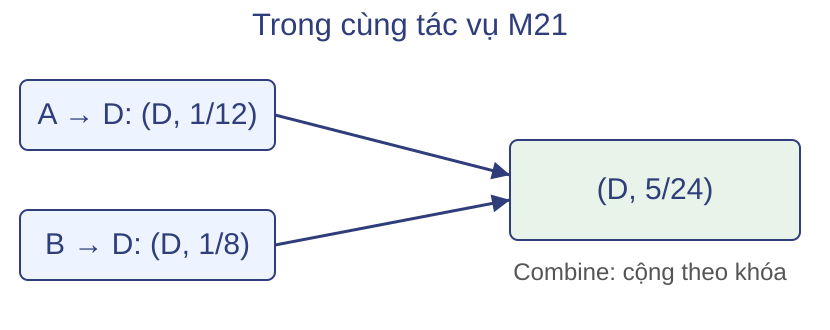
| Phương án | Bản ghi | Byte |
|---|---|---|
| Không Combine | \(m=8\) bản ghi cạnh, 12 byte/bản ghi | 96 |
| Có Combine | \(q=7\) bản ghi khóa, 12 byte/bản ghi | 84 |
Khóa 4 byte, giá trị 8 byte; \(H\) là tổng đầu vào Reduce sau gộp cục bộ.
\(C=I+H\) giảm từ \(248\) xuống \(236\) byte khi chỉ tính lõi phép nhân.
Mô hình: mỗi cạnh tốn \(c_e\) giây, \(W=m\cdot c_e\); bỏ đọc, truyền và lập lịch.
Công việc bốn khối: \(2c_e,\ 2c_e,\ 3c_e,\ 1c_e\); \(W=8c_e\).
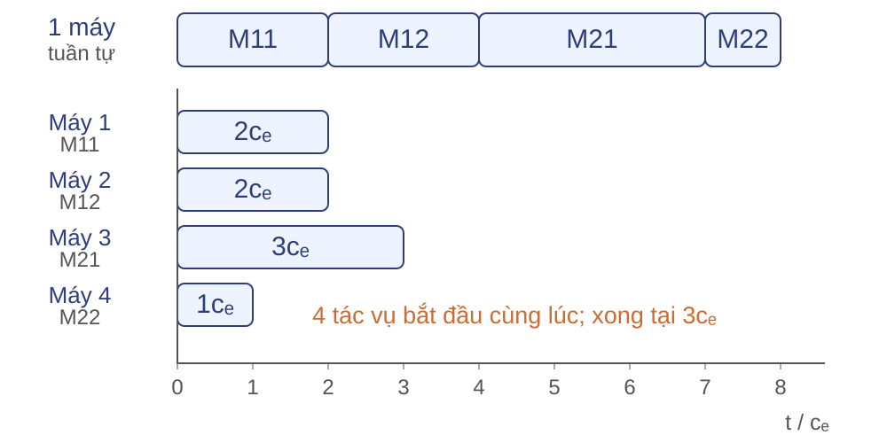
Bốn máy: \(T_{\mathrm{map}}=3c_e\), tăng tốc \(8/3\) thay vì 4; \(W\) không đổi.
Mô hình: \(Q\) là byte thực sự qua mạng; \(b_{\mathrm{eff}}\) là băng thông hiệu quả (byte/giây).
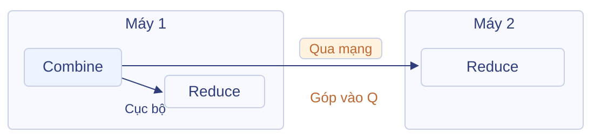
\[T_{\mathrm{shuffle}}\ge Q/b_{\mathrm{eff}}\]
Nếu cả 7 bản ghi sau Combine qua mạng: \(Q=7\cdot12=84\) byte.
Bỏ nén, chạy lại và phần phụ trội; \(Q\) phụ thuộc nơi đặt tác vụ.
Mô hình: các pha không chồng nhau; thời gian đo bằng giây.
Cộng điểm nút cụt
Tính đóng góp
Chuyển, nhóm
Gộp, cập nhật
Đồng bộ
\[T_{\mathrm{round}}\approx T_\delta+T_{\mathrm{map}}+T_{\mathrm{shuffle}}+T_{\mathrm{reduce}}+T_{\mathrm{sync}}\]
\(L\) vòng: \(T_{\mathrm{job}}=T_{\mathrm{setup}}+\sum_{t=1}^{L}T_{\mathrm{round},t}\).
Thêm máy giảm \(T_{\mathrm{map}}\); truyền, gộp và đồng bộ vẫn tốn thời gian.
Câu hỏi: dùng các công thức chi phí.
Muốn kiểm công thức cập nhật bằng số, phải viết chương trình Python và đối chiếu với kết quả tính tay.
Giao diện hàm · Một vòng cập nhật · Điều kiện dừng · Kiểm chứng
Python 3, chỉ thư viện chuẩn; chạy trên một máy để kiểm công thức, không đo tăng tốc.
Mã: Tải pagerank.py
adj = {
"A": ["B", "C", "D"],
"B": ["A", "D"],
"C": ["A"],
"D": ["B", "C"],
}pagerank(adj, beta=0.8, tol=1e-8, max_iter=100)
Trả về dict: rank, converged, iterations, delta.
Giữ mọi nút, kể cả nút không có liên kết vào hoặc không có liên kết ra.
Giả thiết: \(n\ge1\); mọi đích là khóa của dict; \(0<\beta<1\), \(\tau\) (tol) \(>0\), \(T_{\max}\) (max_iter) nguyên dương.
def step(adj, r, beta):
n = len(adj)
delta = sum(r[j] for j in adj if not adj[j])
common = (1.0 - beta + beta * delta) / n
new = {i: common for i in adj}
for j, targets in adj.items():
if not targets:
continue
share = beta * r[j] / len(targets)
for i in targets:
new[i] += share
return newcommon cấp phần chung cho mọi trang; điểm cũ \(r\) chỉ được đọc.
n = len(adj)
r = {i: 1.0 / n for i in adj}
iterations, converged = 0, False
for _ in range(max_iter):
new = step(adj, r, beta)
delta = sum(abs(new[i] - r[i]) for i in adj)
r = new
iterations += 1
if delta <= tol:
converged = True
break
# Trả r, converged, iterations, delta sau vòng lặp.Đồ thị gốc, \(\beta=4/5\).
\(r^0\longrightarrow r^1\)
\(\Delta_0=0{,}2\)
\(r^1\longrightarrow r^2\)
\(\Delta_1=0{,}08\)
Với \(\tau=10^{-8}\): cả hai vòng chưa đạt.
Tính \(\Delta\) trước khi gán \(r=\mathrm{new}\); \(\tau\) đo độ thay đổi, không đo sai số nghiệm.
python3 materials/lec-03/code/pagerank.py \
--variant base --beta 0.8 --tol 1e-8 --max-iter 100Chạy từ thư mục 2627-1. Đầu ra là JSON: rank, converged, iterations, delta, rank_sum.
Giá trị hội tụ của base:
\(r_A=9/28\approx0{,}321429\)
\(r_B=r_C=r_D=19/84\approx0{,}226190\)
Đạt ngưỡng sau 20 vòng; độ thay đổi cuối \(\Delta\approx5{,}50\times10^{-9}\).
| Phép kiểm | Giá trị đúng |
|---|---|
| Tổng điểm, dấu | \(\sum_i r_i\approx1\), mọi \(r_i\ge0\) |
| Một bước, base, \(r^0\) đều, \(\beta=0{,}8\) | \(r_A=7/20\); \(r_B=r_C=r_D=13/60\) |
| Một bước, dead (bỏ C→A), cùng \(r^0\), \(\beta\) | \(r_A=1/5\); \(r_B=r_C=r_D=4/15\) |
So sánh bằng dung sai: abs(got - want) <= 1e-12, không dùng so sánh bằng của số thực.
Trường hợp biên: toàn nút cụt và một nút có khuyên, kiểm trong practice-README.md.
Câu hỏi: tìm và sửa lỗi trong ba đoạn cập nhật sau.
Muốn chọn cách tính PageRank cho một tỷ trang, phải nêu giả thiết, bảo đảm và chi phí của từng kết quả.
Giả thiết · Bảo đảm và chi phí · Một tỷ trang · Câu hỏi tự kiểm tra · Tài liệu đọc
| Kết quả | Giả thiết không được bỏ | Công thức hoặc thuật toán |
|---|---|---|
| Một vòng cập nhật | mọi trang dùng cùng \(r^t\); chia theo bậc ra toàn cục | \({r^{t+1}=\beta M_0r^t+c^tu}\), \({c^t=(1-\beta)+\beta\delta^t}\) |
| Bảo toàn tổng | \(r^t\ge0\), tổng 1; giữ phần bù nút cụt | \(\beta(1-\delta)+\beta\delta+(1-\beta)=1\) |
| Hội tụ, nghiệm duy nhất | \(0<\beta<1\); bước nhảy đều; bù nút cụt | \(\|F(x)-F(y)\|_1\le\beta\|x-y\|_1\) |
| Điều kiện dừng | \(\tau>0\); \(T_{\max}\) nguyên dương | \(\Delta_t\le\tau\); \(\Delta_t\) không là sai số nghiệm |
| Chia khối đúng | điểm cũ cố định; tập nguồn không chồng nhau; \(\delta\) tính một lần | \({\sum_b\sum_{j\in V_b,\,j\to i}r_j/d_j}={\sum_{j\to i}r_j/d_j}\) |
Mô hình: thời gian theo số trang và cạnh; bộ nhớ theo byte, điểm 8 byte, mã 4 byte.
| Thuật toán | Đầu vào | Bảo đảm | Chi phí |
|---|---|---|---|
| PageRank lặp, một máy | danh sách kề, \(\beta\), \(\tau\), \(T_{\max}\) | tổng 1 mỗi vòng; trạng thái dừng đúng | \(O(n+m)\) mỗi vòng; bộ nhớ \(16n\) byte |
| Một vòng theo khối | \(k^2\) khối, dải \(r_b\), \(\delta\) | như một máy trên số thực | \({16n/k+B_{\text{buf}}}\) byte một tác vụ; \({I=S_{\mathrm{blocks}}+8kn}\) |
| Lưu liên kết ra | \(n\) trang, \(m\) cạnh | suy được \(1/d_j\) từ bậc ra | \(\approx4(n+m)\) byte so với \(8n^2\) |
Kết luận: với \(0<\beta<1\) và \(m\ll n^2\), PageRank của \(10^9\) trang tính được bằng lặp theo khối.
Câu hỏi: vận dụng.
Nguồn: Leskovec, Rajaraman, Ullman (2020), Mining of Massive Datasets, ấn bản 3, Chương 5, §§5.1–5.2, tr.175–195; §2.5.1, tr.53–54.
Sách và trang chiếu của các tác giả: http://www.mmds.org.
Nguồn: Stanford CS246 (2026), Leskovec và Kanatsoulis, bài “PageRank”, trang chiếu 45, 51 và 54.
Bài 04 giữ phép lặp, đổi nơi đến của bước nhảy theo chủ đề hoặc tập tin cậy.
Muốn kiểm mô hình điểm và cách lưu liên kết ra, phải lập hệ cân bằng và bảng liên kết ra trên đồ thị nhỏ.
Không bước nhảy · Có bước nhảy · Ngưỡng ma trận thưa · Danh sách liên kết ra
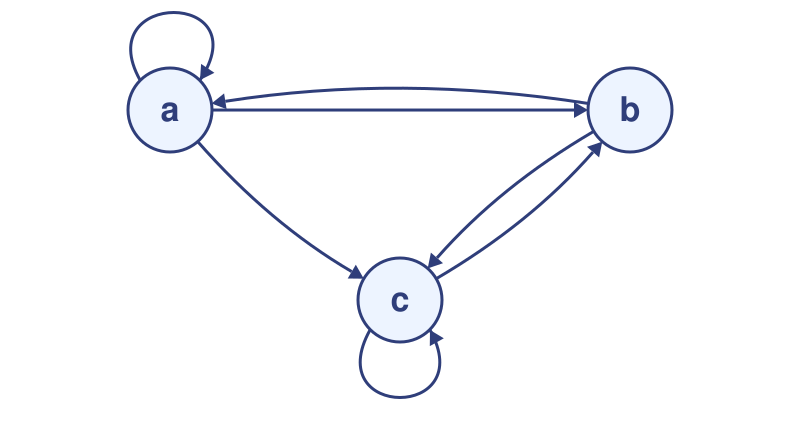
Câu hỏi: tính PageRank của từng trang trên đồ thị Hình 5.7, không có bước nhảy.
Trình bày các phương trình, điểm từng trang và phép kiểm tổng bằng 1.
Hình 5.7: a→a, b, c; b→a, c; c→b, c; bảy cạnh, khuyên ở a và c.
Nguồn: MMDS, Bài 5.1.1, §5.1.7, tr.187–188, Hình 5.7.
Câu hỏi: tính PageRank của từng trang trên cùng đồ thị với \(\beta=0{,}8\).
Trình bày các phương trình, điểm từng trang và phép kiểm tổng bằng 1.
Đồ thị không có nút cụt nên \(\delta=0\).
Nguồn: MMDS, Bài 5.1.2, §5.1.7, tr.188.
Câu hỏi: ma trận Boolean \(n\times n\) (chỉ chứa 0 và 1) được lưu theo hai cách.
Gọi \(m\) là số ô 1, \(\rho=m/n^2\); xác định \(\rho\) để cách thưa tốn ít bit hơn.
Trình bày hai biểu thức dung lượng và điều kiện của \(\rho\).
Nguồn: MMDS, Bài 5.2.1, §5.2.6, tr.195.
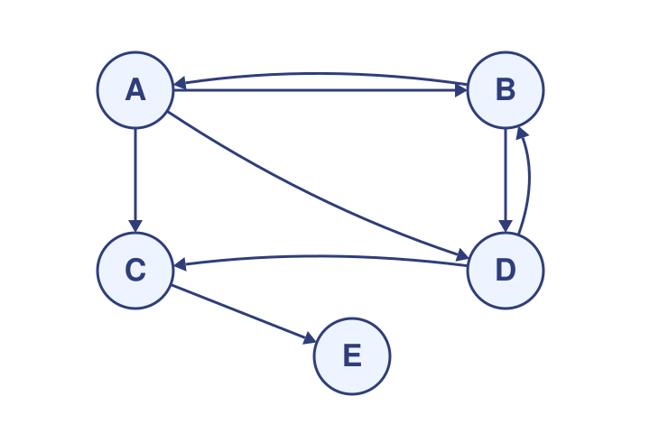
Câu hỏi: với Hình 5.4 và Hình 5.7, lập bảng nguồn, bậc ra, danh sách đích theo §5.2.1.
Trái: Hình 5.4, nút E không có liên kết ra. Phải: Hình 5.7, bảy cạnh, khuyên ở a và c.
Nguồn: MMDS, Bài 5.2.2, §5.2.6, tr.195; Hình 5.4, tr.184; Hình 5.7, tr.188.